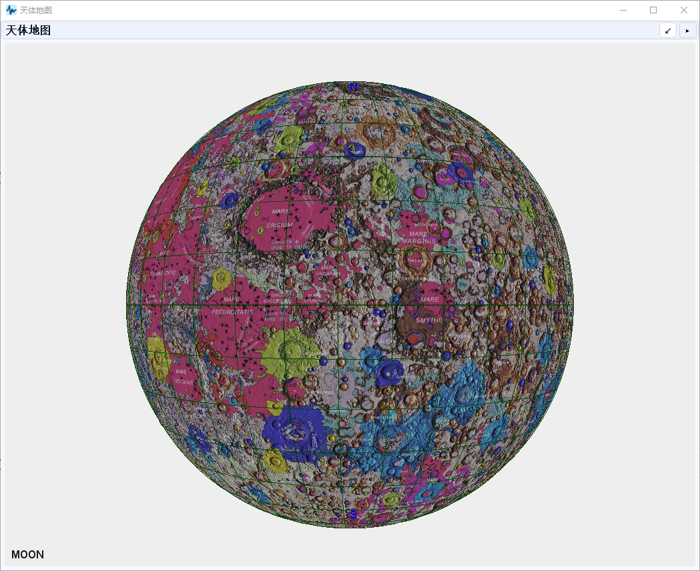
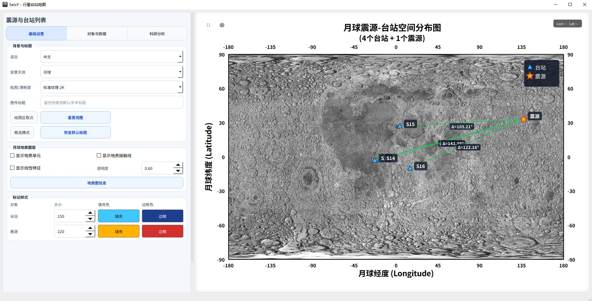

三维地质图与行星地图
地震学的结果最终要落到空间上：震源在哪、台站怎么分布、和地质单元什么关系。 这一章的两个窗口负责这件事。
3D 月球地质图

入口：工具 › 3D月球地质图。
显示控制
| 开关 | 作用 |
|---|---|
| 显示地质图层 | 叠加地质单元色块与接触线 |
| 显示经纬网格 | 叠加经纬网（图中绿色网格） |
| 自动旋转 | 月球自转，用于演示和检查背面 |
| 控件 | 说明 |
|---|---|
| 透明度 | 地质图层的透明度，默认 60%。看底图纹理时调低，看地质边界时调高 |
| 纹理 | 底图分辨率（标准纹理 2K 等），高分辨率更清晰但更吃显存 |
地质图信息
面板底部给出当前图层的规模：
| 项 | 含义 |
|---|---|
| 地质单元 | 多边形单元数量 |
| 接触线 | 单元之间的边界线数量 |
| 线性特征 | 线性构造（如月堑、月溪）数量 |
| 单元类型 | 地质单元的分类数 |
这些数字是图层规模，不是你的数据
它们描述的是加载的地质图本身，和当前工程里的地震事件无关。
用它们判断图层是否完整加载——数字明显偏小说明文件没读全。
操作
| 按钮 | 作用 |
|---|---|
| 重置视图 | 回到默认视角 |
| 截图 | 把当前视角存成图片 |
鼠标拖动旋转，滚轮缩放。
先关掉地质图层再定位
地质色块会盖住底图的月海与高地边界。要在图上找某个台站的位置，
先取消勾选「显示地质图层」，定位完再打开看地质关系。
行星台站地图

入口：工具 › 行星台站地图。
和三维地质图不同，这是一个平面投影的台站与事件分布图，用于回答 「这些台站覆盖了哪些区域、有没有偏到背面、震源离台站多远」。 震源定位器里的 打开完整地图 就是跳到这个窗口。
左侧设置
| 分组 | 控件 | 作用 |
|---|---|---|
| 背景与标题 | 语言 | 图内标注语言（中文 / English） |
| 背景天体 | 月球 / 火星 / 地球等，决定底图 | |
| 贴图 / 清晰度 | 底图分辨率，标准纹理 2K 等 | |
| 图件标题 | 留空则用默认学术标题 | |
| 地图区取点 | 在地图上点选坐标 | |
| 框选模式 | 拖框选择区域 | |
| 重置视图 / 恢复默认标题 | 撤销前面的改动 | |
| 月球地图图层 | 显示地质单元 | 叠加地质单元色块 |
| 显示地质接触线 | 叠加单元边界 | |
| 显示线性特征 | 叠加月堑、月溪等线性构造 | |
| 透明度 | 地质图层的透明度，默认 0.60 | |
| 地质图图例 | 打开图例窗口查颜色对应 | |
| 标记样式 | 台站 / 震源 大小 | 标记的像素尺寸 |
| 填充色 / 边颜色 | 分别设置，深色底图下建议用亮色填充 |
图上怎么读
- 三角形是台站，五角星是震源；
- 连线上的
d=105.21°是台站到震源的角距（度），不是公里数。 月球半径 1737 km，1° 约等于 30.3 km，换算一下就能估距离； - 右上角 Lon-Lat 可切换投影方式。
先看台站是不是挤在一侧
如果所有台站都在月球正面、震源却在背面，定位的方位约束会很弱。
这张图最大的用处就是一眼看出这种几何缺陷——比看坐标表快得多。
设置 › 天体地图设置 里可以配置默认显示的天体、 投影方式和标注样式，改完对之后每次打开都生效。
地质图图例
入口：工具 › 地质图图例。
图例把颜色和地质单元类型对应起来。写图件说明时从这里抄颜色， 不要凭肉眼比色——同一套色在不同显示器上差别很大。
常见问题
三维图打开是黑屏或纯白？ 显卡不支持所需的 OpenGL 版本。更新显卡驱动；远程桌面环境下这类窗口 经常渲染不出来，需要在本机运行。
地质图层打开了但看不到色块？ 透明度调到了 0，或者图层文件没加载完整。看「地质图信息」里的单元数量。
地图上找不到我的台站？ 台站坐标可能是经纬度顺序填反了（纬度在前）。检查台站元数据表。